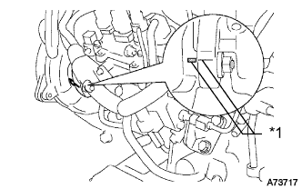
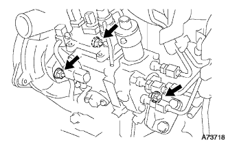
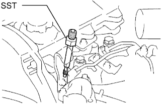
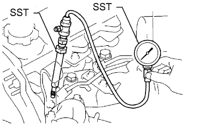

ДВИГАТЕЛЬ > ПРОВЕРКА БЕЗ СНЯТИЯ С АВТОМОБИЛЯ |
| 1. INSPECT INJECTION TIMING |
|  |
Using a mirror, check that the matchmarks of the injection pump flange and timing belt case are aligned.
| *1 | Matchmark |
| 2. ADJUST INJECTION TIMING |
|  |
Loosen the following nuts and bolts.
The bolt holding the injection pump to the injection pump stay.
The 2 nuts holding the injection pump to the timing belt case.
Align the matchmark by slightly tilting the injection pump.
Tighten the following nuts and bolts.
The 2 nuts holding the injection pump to the timing belt case.
The bolt holding the injection pump to the injection pump stay.
| 3. INSPECT ENGINE IDLE SPEED |
Warm up the engine.
When using the intelligent tester:
Connect the intelligent tester to the DLC3.
 |
When not using an intelligent tester:
Using SST, connect the tachometer test probe to terminal 9 (TAC) of the DLC3.
| *a | Front View of DLC3 |
| 4. INSPECT MAXIMUM ENGINE SPEED |
Start the engine.
Fully depress the accelerator pedal.
Check the maximum speed.
| 5. INSPECT COMPRESSION |
Warm up and stop the engine.
Remove the glow plugs.
Disconnect the spill control valve connector.
Check the cylinder compression pressure.
|  |
Install SST (attachment) to the glow plug hole.
|  |
Connect SST (compression gauge) to SST (attachment).
Fully open the throttle valve, and start the engine.
While cranking the engine, measure the compression pressure.
Repeat the steps above for each cylinder.
Remove SST.
Reinstall the glow plugs.
Reconnect the spill control valve connector.